Sela Retreats
Rehat yang tidak terburu-buru: suaka tenang, ritme harian lembut, harga jual yang jelas. — Panduan lengkap identitas merek, sistem logo, palet warna WCAG 2.1 AA, tipografi Lora + DM Sans, anatomi mesin pencari, dan komponen etalase Ortasys S4.
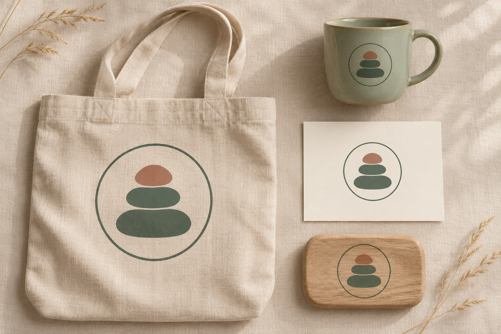
Posisi Merek & Temuan Riset Desain (Wellness & Slow Living)
Pembeda dari 9 template lain: komposisi terpusat (hero bingkai pavilion), konsol pil bersekat, inventori satu-kolom jurnal, manifesto jadwal harian. Tidak ada grid kartu 3 kolom kecuali pada halaman hasil yang menggunakan tetap pola satu kolom horizontal.
Aksesibilitas: token teks muted/accent/secondary diturunkan agar ≥ 4.5:1 (lihat `brand-dna.json`); foto selalu diberi scrim bila teks di atasnya.
Citra: cahaya alami lembut, desaturasi ringan, tanpa wajah dikenali — hanya sosok kecil dari belakang.
Master Mark, Varian Latar, Clear Space & Aplikasi Merek
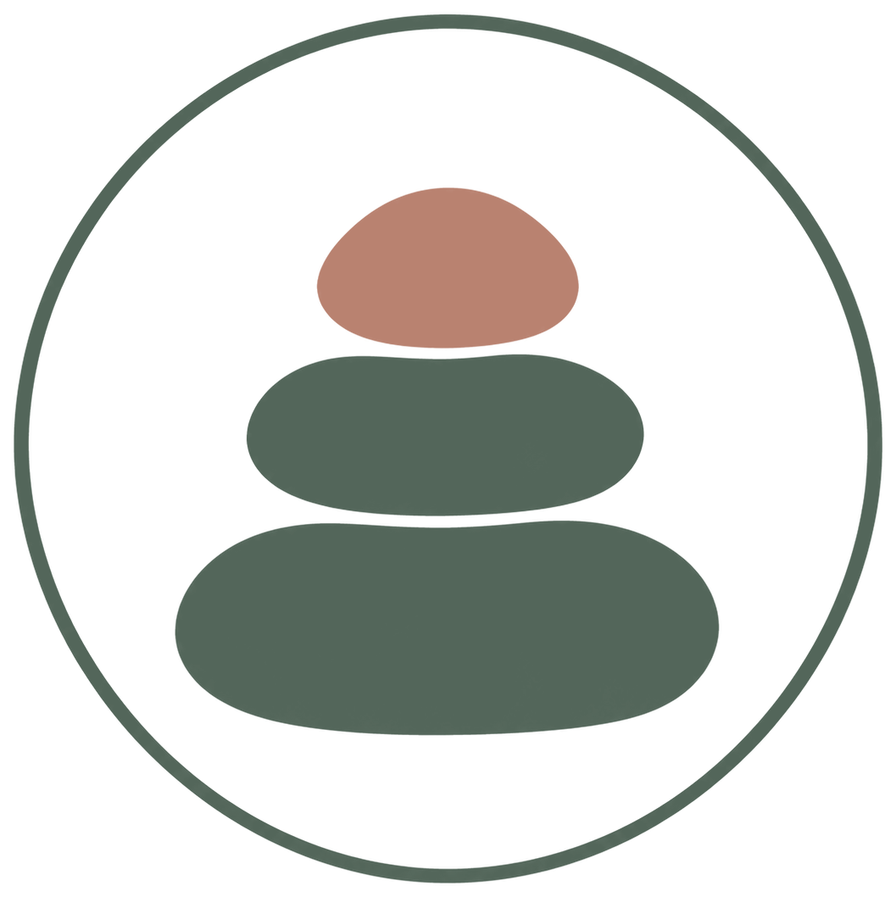
Digunakan pada permukaan terang (#F5F3EC, #FFFEFA) dengan ruang bebas minimal 0,25× tinggi simbol.
Digunakan pada permukaan gelap (#53665A, #3D5045) dan bagian footer malam.
Penerapan konsisten pada papan nama, kartu tamu, dan perlengkapan perjalanan.
Token Warna Inti & Derivasi Aksesibilitas
Primary
Primary action, active navigation, key brand anchor
Primary Hover
Hover & pressed state for primary controls
Secondary
Secondary highlights, badges & supporting accents
Tertiary
Warm supporting surfaces & editorial dividers
Accent
Focused emphasis markers & category tags
Background Canvas
Main page canvas & broad section background
Surface
Cards, search console, popovers & modals
Surface Muted
Secondary container contrast & table headers
Text Primary
Headings, body copy & primary data values
Text Muted (Raw)
Metadata, captions & helper descriptions
Border
Hairline card dividers & structural rules
Success
Live price assurance & verified confirmation
Warning
Quota notices & seasonal advisories
Error
Validation alerts & destructive actions
Matriks Verifikasi Kontras WCAG 2.1 AA
Text Primary on Canvas
#303B34 on #F5F3EC
Text Primary on Surface
#303B34 on #FFFEFA
White on Primary CTA
#FFFFFF on #53665A
Primary on Surface
#53665A on #FFFEFA
Derived AA Muted on Canvas
#636960 on #F5F3EC
Derived Field Border on Surface
#8A8B83 on #FFFEFA
Lora + DM Sans
Aa Bb Cc
Lora
Digunakan untuk judul hero, tajuk seksi, dan nama properti utama.
Aa 0123
DM Sans
Rp 2.450.000 · 9–12 Nov 2026 · 2 Dewasa (Tabular Numerals aktif).
Skala Sudut & Kontainer
Pola Tata Letak & Komponen Khas Preset 07
Hero Architecture (Centered Zen Pavilion Frame):
A light oatmeal canvas (`#F5F3EC`) with centered poetic serif typography (`Lora`), generous breathing space, and a wide soft-framed panoramic sanctuary photograph (`rounded-[32px]`) below the headline.
Search Engine UI (Floating Zen Intention Pill Console):
A serene centered console (`max-w-4xl mx-auto rounded-[28px]`) with soft sage dividers, unhurried serif labels (*Pilih Lokasi Hening*, *Mulai Rehat*, *Selesai Rehat*, *Kapasitas Suaka*), and a pill-shaped sage verification trigger.
Inventory Section Layout (Single-Column Slow-Scroll Sanctuary Showcase):
Replaces multi-column card grids with a centered single-column vertical showcase (`max-w-4xl mx-auto`). Each sanctuary is presented as a wide horizontal pavilion card (`rounded-3xl`) with a 5-column natural-light image on one side and a 7-column restorative journal entry on the other.
Manifesto Section (Daily Slow-Living Rhythm Schedule):
A 3-part daily rhythm card sequence (*06:00 Hening Fajar*, *11:00 Kebun Nabati*, *17:00 Sound Bath Senja*) illustrating the unhurried pace of the retreats alongside transparent SNAP BI & DOKU settlement.
Aset Visual Khusus Sela Retreats (./assets/*.webp)
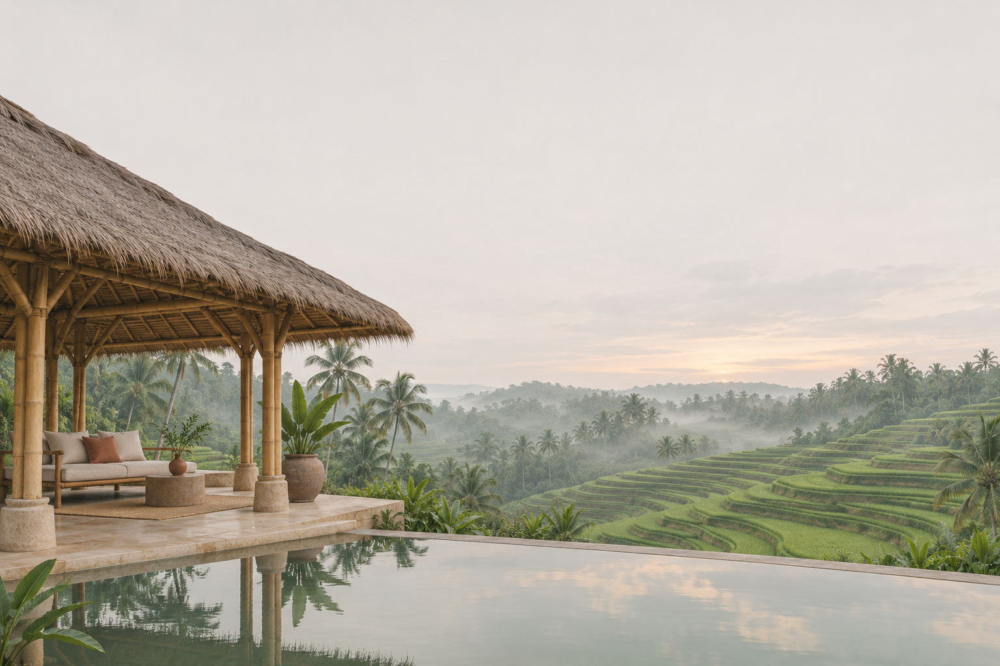
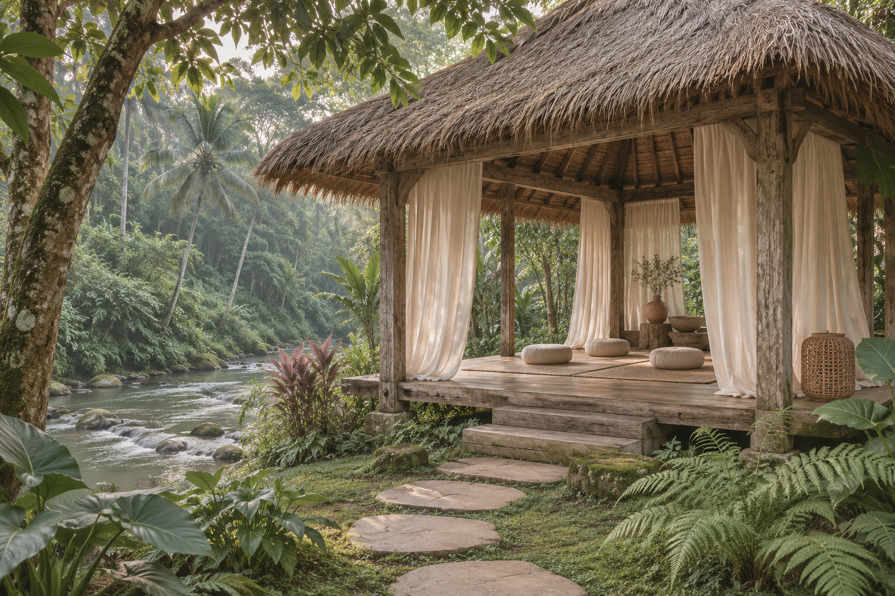
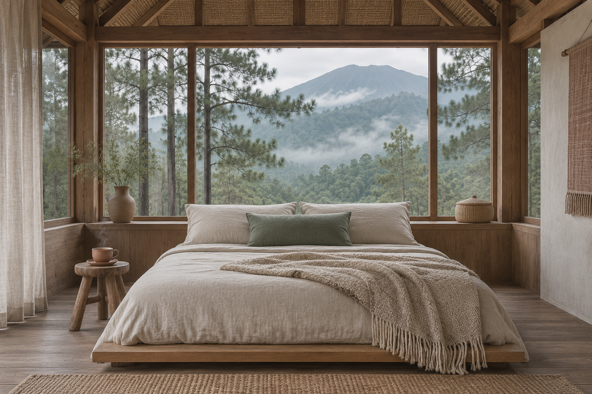
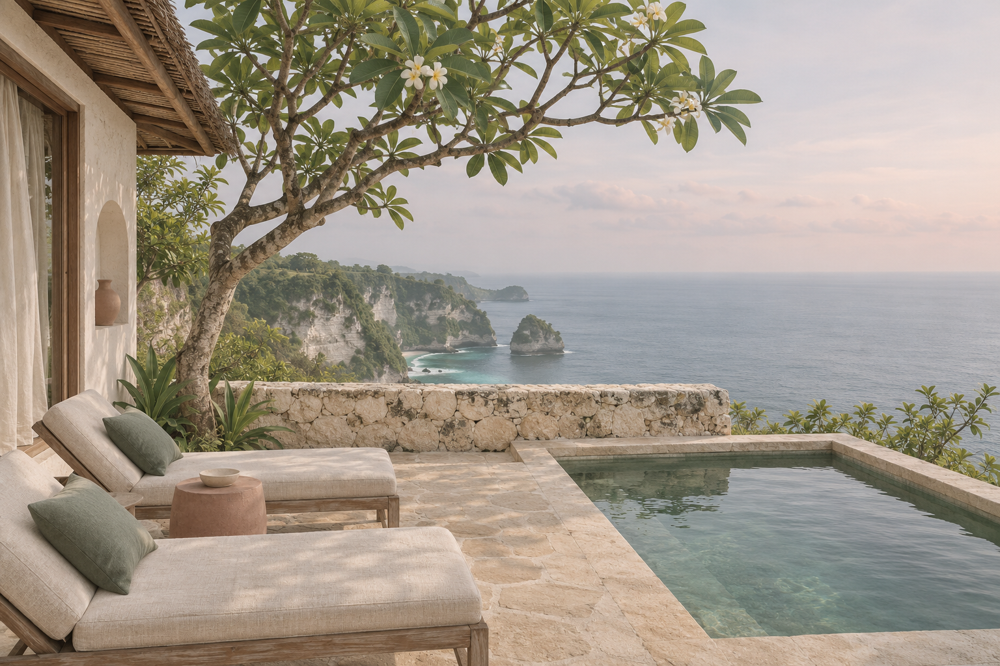
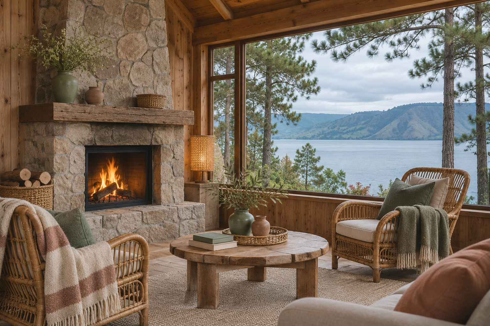
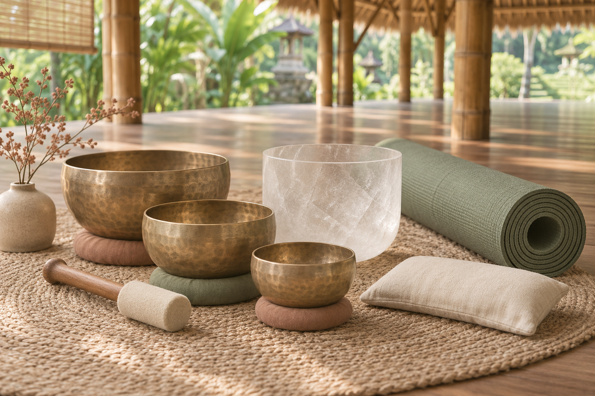
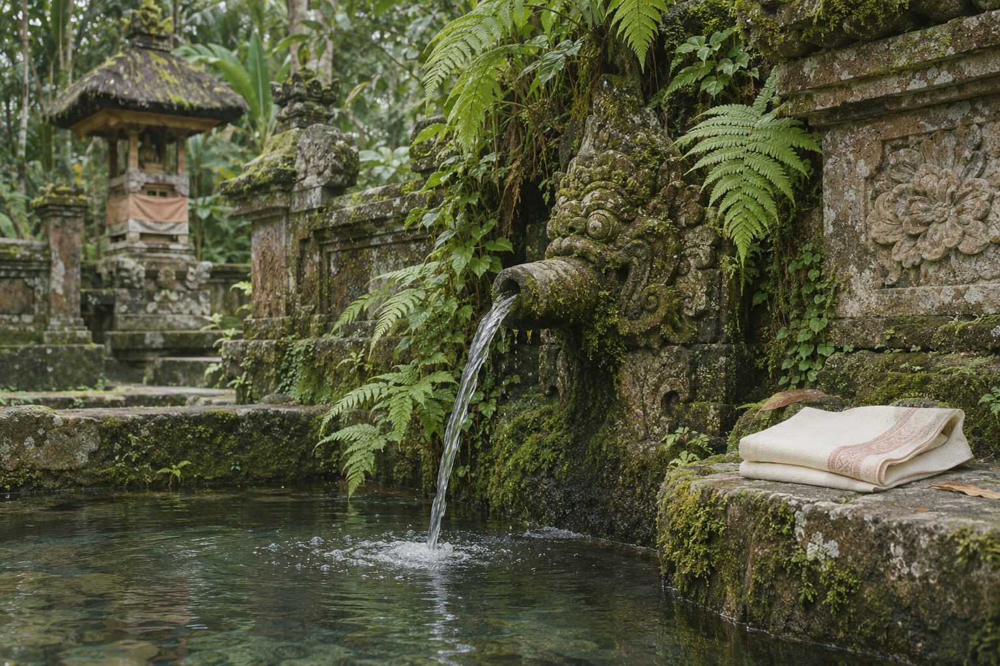
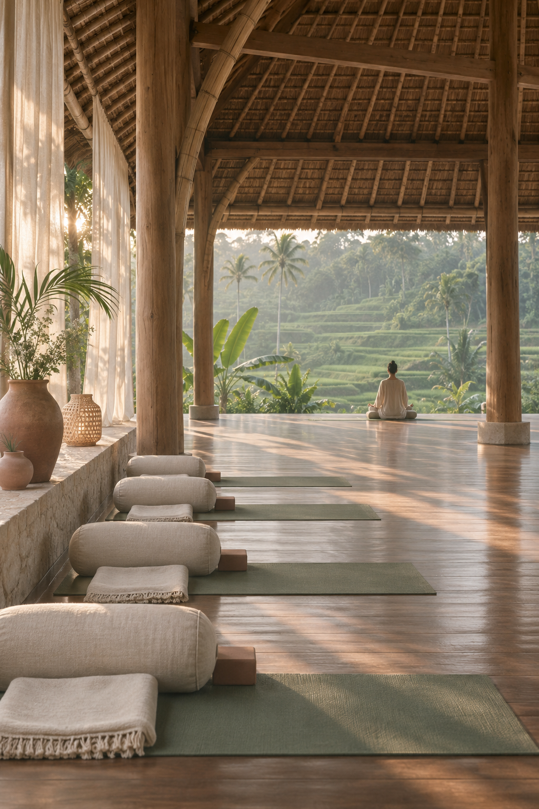
Pedoman Implementasi Positif
- ✓ Do use calm composition and authentic nature imagery.
- ✓ Do keep transactional information clear.
- ✓ Do use whitespace intentionally, not as a substitute for content.
- ✓ Do distinguish travel inspiration from verified product information.
Batasan Kontrak Produk Ortasys S4
- ✕ Don't use low-contrast pale text.
- ✕ Don't make health or therapeutic promises.
- ✕ Don't imply certification or practitioner credentials without evidence.
- ✕ Don't hide search or booking behind lifestyle storytelling.
- ✕ Don't expose supplier net rates or internal agent data.